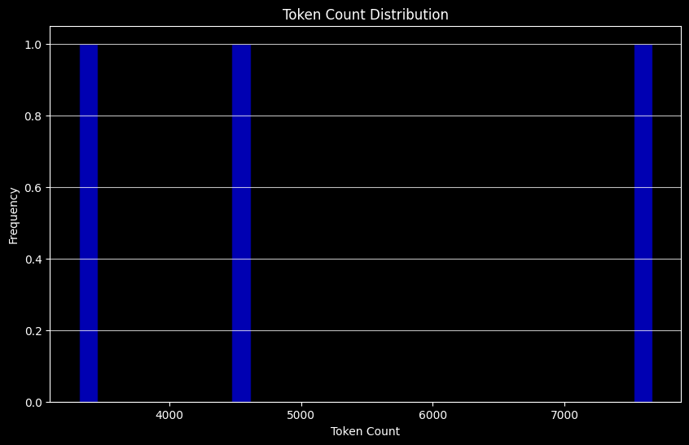

# API 키를 환경변수로 관리하기 위한 설정 파일
from dotenv import load_dotenv
# API 키 정보 로드
load_dotenv()TrueRAPTOR 논문은 문서의 색인 생성 및 검색에 대한 흥미로운 접근 방식을 제시합니다.
leafs 는 가장 low-level 의 시작 문서 집합입니다. 이 문서들은 임베딩되어 클러스터링됩니다.이 과정은 재귀적으로 수행되어, 원본 문서(leafs)에서 더 추상적인 요약으로 이어지는 “트리”를 형성합니다.
leafs는 다음과 같은 문서들로 구성될 수 있습니다.
이번 튜토리얼에서는 LangChain 의 LCEL 문서에 이를 적용해 보도록 하겠습니다. 소스코드 기반의 RAG 시스템을 구축할 때 RAPTOR 방법론을 적용하는 방법에 대해서 다룹니다.
doc은 LCEL 문서의 고유한 웹 페이지입니다. context 는 2,000 토큰 미만에서 10,000 토큰 이상까지 다양합니다.
웹 문서에서 텍스트 데이터를 추출하고, 텍스트의 토큰 수를 계산하여 히스토그램으로 시각화합니다.
from langchain_community.document_loaders.recursive_url_loader import RecursiveUrlLoader
from bs4 import BeautifulSoup as Soup
import tiktoken
import matplotlib.pyplot as plt
# 토큰 수 계산
def num_tokens_from_string(string: str, encoding_name: str):
encoding = tiktoken.get_encoding(encoding_name)
num_tokens = len(encoding.encode(string))
return num_tokens
# LCEL 문서 로드
url = "https://python.langchain.com/docs/concepts/lcel/"
loader = RecursiveUrlLoader(
url=url, max_depth=20, extractor=lambda x: Soup(x, "html.parser").text
)
docs = loader.load()
# PydanticOutputParser를 사용한 LCEL 문서 로드 (기본 LCEL 문서 외부)
url = "https://python.langchain.com/api_reference/core/output_parsers/langchain_core.output_parsers.pydantic.PydanticOutputParser.html"
loader = RecursiveUrlLoader(
url=url, max_depth=1, extractor=lambda x: Soup(x, "html.parser").text
)
docs_pydantic = loader.load()
# Self Query를 사용한 LCEL 문서 로드 (기본 LCEL 문서 외부)
url = "https://python.langchain.com/docs/how_to/self_query/"
loader = RecursiveUrlLoader(
url=url, max_depth=1, extractor=lambda x: Soup(x, "html.parser").text
)
docs_sq = loader.load()
# 문서 텍스트
docs.extend([*docs_pydantic, *docs_sq])
docs_texts = [d.page_content for d in docs]
# 각 문서에 대한 토큰 수 계산
counts = [num_tokens_from_string(d, "cl100k_base") for d in docs_texts]
# 토큰 수의 히스토그램을 그립니다.
plt.figure(figsize=(10, 6))
plt.hist(counts, bins=30, color="blue", edgecolor="black", alpha=0.7)
plt.title("Token Count Distribution")
plt.xlabel("Token Count")
plt.ylabel("Frequency")
plt.grid(axis="y", alpha=0.75)
# 히스토그램을 표시합니다.
plt.show()
문서 텍스트를 정렬합니다. 이때 메타데이터의 source 를 기준으로 정렬한 뒤, 모든 문서를 연결합니다.
# 문서를 출처 메타데이터 기준으로 정렬합니다.
d_sorted = sorted(docs, key=lambda x: x.metadata["source"])
d_reversed = list(reversed(d_sorted))
# 역순으로 배열된 문서의 내용을 연결합니다.
concatenated_content = "\n\n\n --- \n\n\n".join(
[doc.page_content for doc in d_reversed]
)
print(
"전체 토큰 수: %s" # 모든 문맥에서의 토큰 수를 출력합니다.
% num_tokens_from_string(concatenated_content, "cl100k_base")
)전체 토큰 수: 15591RecursiveCharacterTextSplitter를 사용하여 텍스트를 분할합니다.
# 텍스트 분할을 위한 코드
from langchain_text_splitters import RecursiveCharacterTextSplitter
# 기준 토큰수
chunk_size = 2000
# 텍스트 분할기 초기화
text_splitter = RecursiveCharacterTextSplitter.from_tiktoken_encoder(
chunk_size=chunk_size, chunk_overlap=0
)
# 주어진 텍스트를 분할
texts_split = text_splitter.split_text(concatenated_content)다음으로는 분할된 chunk 들을 임베딩하여 vector store 에 저장합니다.
from langchain_openai import OpenAIEmbeddings
from langchain.embeddings import CacheBackedEmbeddings
from langchain.storage import LocalFileStore
# cache 저장 경로 지정
store = LocalFileStore("./cache/")
# embeddings 인스턴스를 생성
embeddings = OpenAIEmbeddings(model="text-embedding-3-small", disallowed_special=())
# CacheBackedEmbeddings 인스턴스를 생성
cached_embeddings = CacheBackedEmbeddings.from_bytes_store(
embeddings, store, namespace=embeddings.model
)트리 구축에서의 클러스터링 접근 방식에 대한 주요 개요입니다.
GMM (가우시안 혼합 모델)
UMAP (Uniform Manifold Approximation and Projection)
지역 및 전역 클러스터링
임계값 설정
GMM 및 임계값 설정에 대한 코드는 아래 두 출처에서 언급된 Sarthi et al의 것입니다.
참조
global_cluster_embeddings
과정
local_cluster_embeddings
과정
from typing import Dict, List, Optional, Tuple
import numpy as np
import pandas as pd
import umap
from langchain.prompts import ChatPromptTemplate
from langchain_core.output_parsers import StrOutputParser
from sklearn.mixture import GaussianMixture
RANDOM_SEED = 42 # 재현성을 위한 고정된 시드 값
def global_cluster_embeddings(
embeddings: np.ndarray,
dim: int,
n_neighbors: Optional[int] = None,
metric: str = "cosine",
) -> np.ndarray:
"""전역적으로 임베딩 벡터의 차원을 축소하는 함수입니다.
Args:
embeddings (np.ndarray): 차원을 축소할 임베딩 벡터들
dim (int): 축소할 차원의 수
n_neighbors (Optional[int], optional): UMAP에서 사용할 이웃의 수. 기본값은 None으로, 이 경우 데이터 크기에 따라 자동 계산됨
metric (str, optional): 거리 계산에 사용할 메트릭. 기본값은 "cosine"
Returns:
np.ndarray: 차원이 축소된 임베딩 벡터들
"""
# 이웃 수 계산
if n_neighbors is None:
n_neighbors = int((len(embeddings) - 1) ** 0.5)
# UMAP 적용
return umap.UMAP(
n_neighbors=n_neighbors, n_components=dim, metric=metric
).fit_transform(embeddings)
def local_cluster_embeddings(
embeddings: np.ndarray, dim: int, num_neighbors: int = 10, metric: str = "cosine"
) -> np.ndarray:
"""로컬(국소적)하게 임베딩 벡터의 차원을 축소하는 함수입니다.
Args:
embeddings (np.ndarray): 차원을 축소할 임베딩 벡터들
dim (int): 축소할 차원의 수
num_neighbors (int, optional): UMAP에서 사용할 이웃의 수. 기본값은 10
metric (str, optional): 거리 계산에 사용할 메트릭. 기본값은 "cosine"
Returns:
np.ndarray: 차원이 축소된 임베딩 벡터들
"""
# UMAP 적용
return umap.UMAP(
n_neighbors=num_neighbors, n_components=dim, metric=metric
).fit_transform(embeddings)get_optimal_clusters
과정
def get_optimal_clusters(
embeddings: np.ndarray, max_clusters: int = 50, random_state: int = RANDOM_SEED
) -> int:
"""BIC 점수를 기반으로 최적의 클러스터 수를 찾는 함수입니다.
Args:
embeddings (np.ndarray): 클러스터링할 임베딩 벡터들
max_clusters (int, optional): 탐색할 최대 클러스터 수. 기본값은 50
random_state (int, optional): 난수 생성을 위한 시드값. 기본값은 RANDOM_SEED
Returns:
int: BIC 점수가 가장 낮은(최적의) 클러스터 수
"""
# 최대 클러스터 수와 임베딩의 길이 중 작은 값을 최대 클러스터 수로 설정
max_clusters = min(max_clusters, len(embeddings))
# 1부터 최대 클러스터 수까지의 범위를 생성
n_clusters = np.arange(1, max_clusters)
# BIC 점수를 저장할 리스트
bics = []
for n in n_clusters:
gm = GaussianMixture(n_components=n, random_state=random_state)
gm.fit(embeddings)
# 학습된 모델의 BIC 점수를 리스트에 추가
bics.append(gm.bic(embeddings))
# BIC 점수가 가장 낮은 클러스터 수를 반환
return n_clusters[np.argmin(bics)]GMM_cluster
과정
get_optimal_clusters 를 통해 최적의 클러스터 수를 찾습니다.GaussianMixture 모델을 해당 클러스터 수로 학습합니다.def GMM_cluster(embeddings: np.ndarray, threshold: float, random_state: int = 0):
# 최적의 클러스터 수 산정
n_clusters = get_optimal_clusters(embeddings)
# 가우시안 혼합 모델을 초기화
gm = GaussianMixture(n_components=n_clusters, random_state=random_state)
gm.fit(embeddings)
# 임베딩이 각 클러스터에 속할 확률을 예측
probs = gm.predict_proba(embeddings)
# 임계값을 초과하는 확률을 가진 클러스터를 레이블로 선택
labels = [np.where(prob > threshold)[0] for prob in probs]
# 레이블과 클러스터 수를 반환
return labels, n_clustersperform_clustering
과정
global_cluster_embeddings 로 전체 임베딩에 대해 UMAP 적용.GMM_cluster 를 사용하여 전역 클러스터 형성.local_cluster_embeddings) 수행.GMM_cluster 로 로컬 클러스터링 수행.def perform_clustering(
embeddings: np.ndarray,
dim: int,
threshold: float,
) -> List[np.ndarray]:
"""
임베딩에 대해 계층적 클러스터링을 수행하는 함수입니다.
전역 차원 축소와 클러스터링을 먼저 수행한 후, 각 전역 클러스터 내에서
로컬 차원 축소와 클러스터링을 수행합니다.
Args:
embeddings (np.ndarray): 클러스터링할 임베딩 벡터들
dim (int): 차원 축소 시 목표 차원 수
threshold (float): GMM 클러스터링에서 사용할 확률 임계값
Returns:
List[np.ndarray]: 각 데이터 포인트에 대한 로컬 클러스터 레이블 리스트.
각 레이블은 해당 데이터 포인트가 속한 로컬 클러스터의 인덱스를 담은 numpy 배열입니다.
"""
if len(embeddings) <= dim + 1:
# 데이터가 충분하지 않을 때 클러스터링을 피합니다.
return [np.array([0]) for _ in range(len(embeddings))]
# 글로벌 차원 축소
reduced_embeddings_global = global_cluster_embeddings(embeddings, dim)
# 글로벌 클러스터링
global_clusters, n_global_clusters = GMM_cluster(
reduced_embeddings_global, threshold
)
# 로컬 클러스터링을 위한 초기화
all_local_clusters = [np.array([]) for _ in range(len(embeddings))]
total_clusters = 0
# 각 글로벌 클러스터를 순회하며 로컬 클러스터링 수행
for i in range(n_global_clusters):
# 현재 글로벌 클러스터에 속하는 임베딩 추출
global_cluster_embeddings_ = embeddings[
np.array([i in gc for gc in global_clusters])
]
if len(global_cluster_embeddings_) == 0:
continue
if len(global_cluster_embeddings_) <= dim + 1:
# 작은 클러스터는 직접 할당으로 처리
local_clusters = [np.array([0]) for _ in global_cluster_embeddings_]
n_local_clusters = 1
else:
# 로컬 차원 축소 및 클러스터링
reduced_embeddings_local = local_cluster_embeddings(
global_cluster_embeddings_, dim
)
local_clusters, n_local_clusters = GMM_cluster(
reduced_embeddings_local, threshold
)
# 로컬 클러스터 ID 할당, 이미 처리된 총 클러스터 수를 조정
for j in range(n_local_clusters):
local_cluster_embeddings_ = global_cluster_embeddings_[
np.array([j in lc for lc in local_clusters])
]
indices = np.where(
(embeddings == local_cluster_embeddings_[:, None]).all(-1)
)[1]
for idx in indices:
all_local_clusters[idx] = np.append(
all_local_clusters[idx], j + total_clusters
)
total_clusters += n_local_clusters
return all_local_clusters주어진 텍스트 리스트를 임베딩 모델을 이용해 벡터로 변환합니다.
def embed(texts):
"""
주어진 텍스트 리스트를 임베딩 벡터로 변환합니다.
Args:
texts (List[str]): 임베딩할 텍스트 리스트
Returns:
np.ndarray: 텍스트의 임베딩 벡터를 포함하는 numpy 배열
shape은 (텍스트 개수, 임베딩 차원)입니다.
"""
text_embeddings = embeddings.embed_documents(texts)
# 임베딩을 numpy 배열로 변환
text_embeddings_np = np.array(text_embeddings)
return text_embeddings_npembed_cluster_texts
과정
def embed_cluster_texts(texts):
# 임베딩 생성
text_embeddings_np = embed(texts)
# 클러스터링 수행
cluster_labels = perform_clustering(text_embeddings_np, 10, 0.1)
# 결과를 저장할 DataFrame 초기화
df = pd.DataFrame()
# 원본 텍스트 저장
df["text"] = texts
# DataFrame에 리스트로 임베딩 저장
df["embd"] = list(text_embeddings_np)
# 클러스터 라벨 저장
df["cluster"] = cluster_labels
return dffmt_txt 함수는 pandas의 DataFrame에서 텍스트 문서를 단일 문자열로 포맷팅합니다.
embed_cluster_summarize_texts
과정
임베딩 & 클러스터링: embed_cluster_texts 함수를 이용해 입력된 텍스트를 임베딩하고 클러스터링한 결과를 df_clusters 로 얻습니다. 이 df_clusters 는 각 문서와 그 문서를 할당받은 (하나 이상일 수 있는) 클러스터를 가지고 있습니다.
클러스터 할당 확장: 어떤 문서가 여러 클러스터에 속할 수 있으므로, 이를 행 단위로 ‘문서-클러스터’ 페어로 확장한 expanded_df 를 만듭니다. 이렇게 하면 이후 처리(특히 요약 단계)에서 각 클러스터별로 문서를 쉽게 그룹화할 수 있습니다.
LLM(대형 언어 모델)을 이용한 요약: 각 클러스터에 속한 문서들의 텍스트를 하나의 문자열로 합친 뒤(fmt_txt 사용), 프롬프트 템플릿을 통해 LLM에 전달합니다. LLM은 해당 클러스터에 대한 요약 문장을 생성합니다.
요약 결과 정리: 클러스터별 요약 결과를 df_summary DataFrame에 저장합니다. 여기에는 summaries(요약문), level(입력 파라미터로 받은 처리 수준), cluster(클러스터 식별자)가 포함됩니다.
def embed_cluster_summarize_texts(
texts: List[str], level: int
) -> Tuple[pd.DataFrame, pd.DataFrame]:
"""
텍스트 목록에 대해 임베딩, 클러스터링 및 요약을 수행합니다. 이 함수는 먼저 텍스트에 대한 임베딩을 생성하고,
유사성을 기반으로 클러스터링을 수행한 다음, 클러스터 할당을 확장하여 처리를 용이하게 하고 각 클러스터 내의 내용을 요약합니다.
매개변수:
- texts: 처리할 텍스트 문서 목록입니다.
- level: 처리의 깊이나 세부 사항을 정의할 수 있는 정수 매개변수입니다.
반환값:
- 두 개의 데이터프레임을 포함하는 튜플:
1. 첫 번째 데이터프레임(`df_clusters`)은 원본 텍스트, 그들의 임베딩, 그리고 클러스터 할당을 포함합니다.
2. 두 번째 데이터프레임(`df_summary`)은 각 클러스터에 대한 요약, 지정된 세부 수준, 그리고 클러스터 식별자를 포함합니다.
"""
# 텍스트를 임베딩하고 클러스터링하여 'text', 'embd', 'cluster' 열이 있는 데이터프레임을 생성합니다.
df_clusters = embed_cluster_texts(texts)
# 클러스터를 쉽게 조작하기 위해 데이터프레임을 확장할 준비를 합니다.
expanded_list = []
# 데이터프레임 항목을 문서-클러스터 쌍으로 확장하여 처리를 간단하게 합니다.
for index, row in df_clusters.iterrows():
for cluster in row["cluster"]:
expanded_list.append(
{"text": row["text"], "embd": row["embd"], "cluster": cluster}
)
# 확장된 목록에서 새 데이터프레임을 생성합니다.
expanded_df = pd.DataFrame(expanded_list)
# 처리를 위해 고유한 클러스터 식별자를 검색합니다.
all_clusters = expanded_df["cluster"].unique()
print(f"--Generated {len(all_clusters)} clusters--")
# 요약
template = """여기 LangChain 표현 언어 문서의 하위 집합이 있습니다.
LangChain 표현 언어는 LangChain에서 체인을 구성하는 방법을 제공합니다.
제공된 문서의 자세한 요약을 제공하십시오.
문서:
{context}
"""
prompt = ChatPromptTemplate.from_template(template)
chain = prompt | llm | StrOutputParser()
# 각 클러스터 내의 텍스트를 요약을 위해 포맷팅합니다.
summaries = []
for i in all_clusters:
df_cluster = expanded_df[expanded_df["cluster"] == i]
formatted_txt = fmt_txt(df_cluster)
summaries.append(chain.invoke({"context": formatted_txt}))
# 요약, 해당 클러스터 및 레벨을 저장할 데이터프레임을 생성합니다.
df_summary = pd.DataFrame(
{
"summaries": summaries,
"level": [level] * len(summaries),
"cluster": list(all_clusters),
}
)
return df_clusters, df_summaryrecursive_embed_cluster_summarize
def recursive_embed_cluster_summarize(
texts: List[str], level: int = 1, n_levels: int = 3
) -> Dict[int, Tuple[pd.DataFrame, pd.DataFrame]]:
# 각 레벨에서의 결과를 저장할 사전
results = {}
# 현재 레벨에 대해 임베딩, 클러스터링, 요약 수행
df_clusters, df_summary = embed_cluster_summarize_texts(texts, level)
# 현재 레벨의 결과 저장
results[level] = (df_clusters, df_summary)
# 추가 재귀가 가능하고 의미가 있는지 결정
unique_clusters = df_summary["cluster"].nunique()
# 현재 레벨이 최대 레벨보다 낮고, 유니크한 클러스터가 1개 이상인 경우
if level < n_levels and unique_clusters > 1:
# 다음 레벨의 재귀 입력 텍스트로 요약 사용
new_texts = df_summary["summaries"].tolist()
next_level_results = recursive_embed_cluster_summarize(
new_texts, level + 1, n_levels
)
# 다음 레벨의 결과를 현재 결과 사전에 병합
results.update(next_level_results)
return results전체 문서의 개수를 확인합니다.
이제 recursive_embed_cluster_summarize 함수를 호출하여 트리 구축을 시작합니다.
level=1 은 첫 번째 단계의 클러스터링 및 요약부터 시작한다는 의미입니다.n_levels=3 은 최대 세 단계까지(조건이 맞는 한) 클러스터링과 요약을 재귀적으로 반복할 수 있다는 뜻입니다.이 과정을 통해 점차 더 추상적이고 집약된 요약 정보를 얻을 수 있게 됩니다.
# 트리 구축
leaf_texts = docs_texts.copy()
# 재귀적으로 임베딩, 클러스터링 및 요약을 수행하여 결과를 얻음
results = recursive_embed_cluster_summarize(leaf_texts, level=1, n_levels=3)--Generated 1 clusters--다음으로는 vectorstore를 생성하고 로컬에 저장합니다.
['\n\n\n\n\nLangChain Expression Language (LCEL) | \uf8ffü¶úÔ∏è\uf8ffüîó LangChain\n\n\n\n\n\n\nSkip to main contentIntegrationsAPI ReferenceMoreContributingPeopleError referenceLangSmithLangGraphLangChain HubLangChain JS/TSv0.3v0.3v0.2v0.1\uf8ffüí¨SearchIntroductionTutorialsBuild a Question Answering application over a Graph DatabaseTutorialsBuild a simple LLM application with chat models and prompt templatesBuild a ChatbotBuild a Retrieval Augmented Generation (RAG) App: Part 2Build an Extraction ChainBuild an AgentTaggingBuild a Retrieval Augmented Generation (RAG) App: Part 1Build a semantic search engineBuild a Question/Answering system over SQL dataSummarize TextHow-to guidesHow-to guidesHow to use tools in a chainHow to use a vectorstore as a retrieverHow to add memory to chatbotsHow to use example selectorsHow to add a semantic layer over graph databaseHow to invoke runnables in parallelHow to stream chat model responsesHow to add default invocation args to a RunnableHow to add retrieval to chatbotsHow to use few shot examples in chat modelsHow to do tool/function callingHow to install LangChain packagesHow to add examples to the prompt for query analysisHow to use few shot examplesHow to run custom functionsHow to use output parsers to parse an LLM response into structured formatHow to handle cases where no queries are generatedHow to route between sub-chainsHow to return structured data from a modelHow to summarize text through parallelizationHow to summarize text through iterative refinementHow to summarize text in a single LLM callHow to use toolkitsHow to add ad-hoc tool calling capability to LLMs and Chat ModelsBuild an Agent with AgentExecutor (Legacy)How to construct knowledge graphsHow to partially format prompt templatesHow to handle multiple queries when doing query analysisHow to use built-in tools and toolkitsHow to pass through arguments from one step to the nextHow to compose prompts togetherHow to handle multiple retrievers when doing query analysisHow to add values to a chain\'s stateHow to construct filters for query analysisHow to configure runtime chain internalsHow deal with high cardinality categoricals when doing query analysisCustom Document LoaderHow to use the MultiQueryRetrieverHow to add scores to retriever resultsCachingHow to use callbacks in async environmentsHow to attach callbacks to a runnableHow to propagate callbacks constructorHow to dispatch custom callback eventsHow to pass callbacks in at runtimeHow to split by characterHow to cache chat model responsesHow to handle rate limitsHow to init any model in one lineHow to track token usage in ChatModelsHow to add tools to chatbotsHow to split codeHow to do retrieval with contextual compressionHow to convert Runnables to ToolsHow to create custom callback handlersHow to create a custom chat model classCustom EmbeddingsHow to create a custom LLM classCustom RetrieverHow to create toolsHow to debug your LLM appsHow to load CSVsHow to load documents from a directoryHow to load HTMLHow to load JSONHow to load MarkdownHow to load Microsoft Office filesHow to load PDFsHow to load web pagesHow to create a dynamic (self-constructing) chainText embedding modelsHow to combine results from multiple retrieversHow to select examples from a LangSmith datasetHow to select examples by lengthHow to select examples by maximal marginal relevance (MMR)How to select examples by n-gram overlapHow to select examples by similarityHow to use reference examples when doing extractionHow to handle long text when doing extractionHow to use prompting alone (no tool calling) to do extractionHow to add fallbacks to a runnableHow to filter messagesHybrid SearchHow to use the LangChain indexing APIHow to inspect runnablesLangChain Expression Language CheatsheetHow to cache LLM responsesHow to track token usage for LLMsRun models locallyHow to get log probabilitiesHow to reorder retrieved results to mitigate the "lost in the middle" effectHow to split Markdown by HeadersHow to merge consecutive messages of the same typeHow to add message historyHow to migrate from legacy LangChain agents to LangGraphHow to retrieve using multiple vectors per documentHow to pass multimodal data directly to modelsHow to use multimodal promptsHow to create a custom Output ParserHow to use the output-fixing parserHow to parse JSON outputHow to retry when a parsing error occursHow to parse text from message objectsHow to parse XML outputHow to parse YAML outputHow to use the Parent Document RetrieverHow to use LangChain with different Pydantic versionsHow to add chat historyHow to get a RAG application to add citationsHow to do per-user retrievalHow to get your RAG application to return sourcesHow to stream results from your RAG applicationHow to split JSON dataHow to recursively split text by charactersResponse metadataHow to pass runtime secrets to runnablesHow to do "self-querying" retrievalHow to split text based on semantic similarityHow to chain runnablesHow to save and load LangChain objectsHow to split text by tokensHow to split HTMLHow to do question answering over CSVsHow to deal with large databases when doing SQL question-answeringHow to better prompt when doing SQL question-answeringHow to do query validation as part of SQL question-answeringHow to stream runnablesHow to stream responses from an LLMHow to use a time-weighted vector store retrieverHow to return artifacts from a toolHow to use chat models to call toolsHow to disable parallel tool callingHow to force models to call a toolHow to access the RunnableConfig from a toolHow to pass tool outputs to chat modelsHow to pass run time values to toolsHow to stream events from a toolHow to stream tool callsHow to convert tools to OpenAI FunctionsHow to handle tool errorsHow to use few-shot prompting with tool callingHow to add a human-in-the-loop for toolsHow to bind model-specific toolsHow to trim messagesHow to create and query vector storesConceptual guideAgentsArchitectureAsync programming with langchainCallbacksChat historyChat modelsDocument loadersEmbedding modelsEvaluationExample selectorsFew-shot promptingConceptual guideKey-value storesLangChain Expression Language (LCEL)MessagesMultimodalityOutput parsersPrompt TemplatesRetrieval augmented generation (RAG)RetrievalRetrieversRunnable interfaceStreamingStructured outputsTestingString-in, string-out llmsText splittersTokensTool callingToolsTracingVector storesWhy LangChain?Ecosystem\uf8ffü¶ú\uf8ffüõ†Ô∏è LangSmith\uf8ffü¶ú\uf8ffüï∏Ô∏è LangGraphVersionsv0.3v0.2Pydantic compatibilityMigrating from v0.0 chainsHow to migrate from v0.0 chainsMigrating from ConstitutionalChainMigrating from ConversationalChainMigrating from ConversationalRetrievalChainMigrating from LLMChainMigrating from LLMMathChainMigrating from LLMRouterChainMigrating from MapReduceDocumentsChainMigrating from MapRerankDocumentsChainMigrating from MultiPromptChainMigrating from RefineDocumentsChainMigrating from RetrievalQAMigrating from StuffDocumentsChainUpgrading to LangGraph memoryHow to migrate to LangGraph memoryHow to use BaseChatMessageHistory with LangGraphMigrating off ConversationBufferMemory or ConversationStringBufferMemoryMigrating off ConversationBufferWindowMemory or ConversationTokenBufferMemoryMigrating off ConversationSummaryMemory or ConversationSummaryBufferMemoryA Long-Term Memory AgentRelease policySecurity PolicyConceptual guideLangChain Expression Language (LCEL)On this pageLangChain Expression Language (LCEL)\nPrerequisites\nRunnable Interface\n\nThe LangChain Expression Language (LCEL) takes a declarative approach to building new Runnables from existing Runnables.\nThis means that you describe what should happen, rather than how it should happen, allowing LangChain to optimize the run-time execution of the chains.\nWe often refer to a Runnable created using LCEL as a "chain". It\'s important to remember that a "chain" is Runnable and it implements the full Runnable Interface.\nnote\nThe LCEL cheatsheet shows common patterns that involve the Runnable interface and LCEL expressions.\nPlease see the following list of how-to guides that cover common tasks with LCEL.\nA list of built-in Runnables can be found in the LangChain Core API Reference. Many of these Runnables are useful when composing custom "chains" in LangChain using LCEL.\n\nBenefits of LCEL‚Äã\nLangChain optimizes the run-time execution of chains built with LCEL in a number of ways:\n\nOptimized parallel execution: Run Runnables in parallel using RunnableParallel or run multiple inputs through a given chain in parallel using the Runnable Batch API. Parallel execution can significantly reduce the latency as processing can be done in parallel instead of sequentially.\nGuaranteed Async support: Any chain built with LCEL can be run asynchronously using the Runnable Async API. This can be useful when running chains in a server environment where you want to handle large number of requests concurrently.\nSimplify streaming: LCEL chains can be streamed, allowing for incremental output as the chain is executed. LangChain can optimize the streaming of the output to minimize the time-to-first-token(time elapsed until the first chunk of output from a chat model or llm comes out).\n\nOther benefits include:\n\nSeamless LangSmith tracing\nAs your chains get more and more complex, it becomes increasingly important to understand what exactly is happening at every step.\nWith LCEL, all steps are automatically logged to LangSmith for maximum observability and debuggability.\nStandard API: Because all chains are built using the Runnable interface, they can be used in the same way as any other Runnable.\nDeployable with LangServe: Chains built with LCEL can be deployed using for production use.\n\nShould I use LCEL?‚Äã\nLCEL is an orchestration solution -- it allows LangChain to handle run-time execution of chains in an optimized way.\nWhile we have seen users run chains with hundreds of steps in production, we generally recommend using LCEL for simpler orchestration tasks. When the application requires complex state management, branching, cycles or multiple agents, we recommend that users take advantage of LangGraph.\nIn LangGraph, users define graphs that specify the application\'s flow. This allows users to keep using LCEL within individual nodes when LCEL is needed, while making it easy to define complex orchestration logic that is more readable and maintainable.\nHere are some guidelines:\n\nIf you are making a single LLM call, you don\'t need LCEL; instead call the underlying chat model directly.\nIf you have a simple chain (e.g., prompt + llm + parser, simple retrieval set up etc.), LCEL is a reasonable fit, if you\'re taking advantage of the LCEL benefits.\nIf you\'re building a complex chain (e.g., with branching, cycles, multiple agents, etc.) use LangGraph instead. Remember that you can always use LCEL within individual nodes in LangGraph.\n\nComposition Primitives‚Äã\nLCEL chains are built by composing existing Runnables together. The two main composition primitives are RunnableSequence and RunnableParallel.\nMany other composition primitives (e.g., RunnableAssign) can be thought of as variations of these two primitives.\nnoteYou can find a list of all composition primitives in the LangChain Core API Reference.\nRunnableSequence‚Äã\nRunnableSequence is a composition primitive that allows you "chain" multiple runnables sequentially, with the output of one runnable serving as the input to the next.\nfrom langchain_core.runnables import RunnableSequencechain = RunnableSequence([runnable1, runnable2])API Reference:RunnableSequence\nInvoking the chain with some input:\nfinal_output = chain.invoke(some_input)\ncorresponds to the following:\noutput1 = runnable1.invoke(some_input)final_output = runnable2.invoke(output1)\nnoterunnable1 and runnable2 are placeholders for any Runnable that you want to chain together.\nRunnableParallel‚Äã\nRunnableParallel is a composition primitive that allows you to run multiple runnables concurrently, with the same input provided to each.\nfrom langchain_core.runnables import RunnableParallelchain = RunnableParallel({ "key1": runnable1, "key2": runnable2,})API Reference:RunnableParallel\nInvoking the chain with some input:\nfinal_output = chain.invoke(some_input)\nWill yield a final_output dictionary with the same keys as the input dictionary, but with the values replaced by the output of the corresponding runnable.\n{ "key1": runnable1.invoke(some_input), "key2": runnable2.invoke(some_input),}\nRecall, that the runnables are executed in parallel, so while the result is the same as\ndictionary comprehension shown above, the execution time is much faster.\nnoteRunnableParallelsupports both synchronous and asynchronous execution (as all Runnables do).\nFor synchronous execution, RunnableParallel uses a ThreadPoolExecutor to run the runnables concurrently.\nFor asynchronous execution, RunnableParallel uses asyncio.gather to run the runnables concurrently.\n\nComposition Syntax‚Äã\nThe usage of RunnableSequence and RunnableParallel is so common that we created a shorthand syntax for using them. This helps\nto make the code more readable and concise.\nThe | operator‚Äã\nWe have overloaded the | operator to create a RunnableSequence from two Runnables.\nchain = runnable1 | runnable2\nis Equivalent to:\nchain = RunnableSequence([runnable1, runnable2])\nThe .pipe method`‚Äã\nIf you have moral qualms with operator overloading, you can use the .pipe method instead. This is equivalent to the | operator.\nchain = runnable1.pipe(runnable2)\nCoercion‚Äã\nLCEL applies automatic type coercion to make it easier to compose chains.\nIf you do not understand the type coercion, you can always use the RunnableSequence and RunnableParallel classes directly.\nThis will make the code more verbose, but it will also make it more explicit.\nDictionary to RunnableParallel‚Äã\nInside an LCEL expression, a dictionary is automatically converted to a RunnableParallel.\nFor example, the following code:\nmapping = { "key1": runnable1, "key2": runnable2,}chain = mapping | runnable3\nIt gets automatically converted to the following:\nchain = RunnableSequence([RunnableParallel(mapping), runnable3])\ncautionYou have to be careful because the mapping dictionary is not a RunnableParallel object, it is just a dictionary. This means that the following code will raise an AttributeError:mapping.invoke(some_input)\nFunction to RunnableLambda‚Äã\nInside an LCEL expression, a function is automatically converted to a RunnableLambda.\ndef some_func(x): return xchain = some_func | runnable1\nIt gets automatically converted to the following:\nchain = RunnableSequence([RunnableLambda(some_func), runnable1])\ncautionYou have to be careful because the lambda function is not a RunnableLambda object, it is just a function. This means that the following code will raise an AttributeError:lambda x: x + 1.invoke(some_input)\nLegacy chains‚Äã\nLCEL aims to provide consistency around behavior and customization over legacy subclassed chains such as LLMChain and\nConversationalRetrievalChain. Many of these legacy chains hide important details like prompts, and as a wider variety\nof viable models emerge, customization has become more and more important.\nIf you are currently using one of these legacy chains, please see this guide for guidance on how to migrate.\nFor guides on how to do specific tasks with LCEL, check out the relevant how-to guides.Edit this pageWas this page helpful?PreviousKey-value storesNextMessagesBenefits of LCELShould I use LCEL?Composition PrimitivesRunnableSequenceRunnableParallelComposition SyntaxThe | operatorThe .pipe method`CoercionLegacy chainsCommunityTwitterGitHubOrganizationPythonJS/TSMoreHomepageBlogYouTubeCopyright ¬© 2024 LangChain, Inc.\n\n',
'\n\n\n\n\n\n\n\n\nPydanticOutputParser ‚Äî \uf8ffü¶ú\uf8ffüîó LangChain documentation\n\n\n\n\n\n\n\n\n\n\n\n\n\n\n\n\n\n\n\n\n\n\n\n\n\n\n\n\n\n\n\n\n\n\n\nSkip to main content\n\n\nBack to top\n\n\n\n\nCtrl+K\n\n\n\n\n\n\n\n\n\n\n\n\n\n\n\n\n\n\n\n\n\n\n\n\n Reference\n \n\n\n\n\n\n\n\n\n\nCtrl+K\n\n\n\n\n\n\n\nDocs\n\n\n\n\n\n\n\n\n\n\nGitHub\n\n\n\nX / Twitter\n\n\n\n\n\n\n\n\nCtrl+K\n\n\n\n\n\n\n\n\n\n\n\n\n\n\n\n\n\n\n Reference\n \n\n\n\n\n\n\n\n\n\n\nDocs\n\n\n\n\n\n\n\n\n\n\nGitHub\n\n\n\nX / Twitter\n\n\n\n\n\n\n\nSection Navigation\nBase packages\n\nCore\nagents\nbeta\ncaches\ncallbacks\nchat_history\nchat_loaders\nchat_sessions\ndocument_loaders\ndocuments\nembeddings\nexample_selectors\nexceptions\nglobals\nindexing\nlanguage_models\nload\nmessages\noutput_parsers\nBaseGenerationOutputParser\nBaseLLMOutputParser\nBaseOutputParser\nJsonOutputParser\nSimpleJsonOutputParser\nCommaSeparatedListOutputParser\nListOutputParser\nMarkdownListOutputParser\nNumberedListOutputParser\nJsonKeyOutputFunctionsParser\nJsonOutputFunctionsParser\nOutputFunctionsParser\nPydanticAttrOutputFunctionsParser\nPydanticOutputFunctionsParser\nJsonOutputKeyToolsParser\nJsonOutputToolsParser\nPydanticToolsParser\nPydanticOutputParser\nStrOutputParser\nBaseCumulativeTransformOutputParser\nBaseTransformOutputParser\nXMLOutputParser\ndroplastn\nmake_invalid_tool_call\nparse_tool_call\nparse_tool_calls\nnested_element\n\n\noutputs\nprompt_values\nprompts\nrate_limiters\nretrievers\nrunnables\nstores\nstructured_query\nsys_info\ntools\ntracers\nutils\nvectorstores\n\n\nLangchain\nText Splitters\nCommunity\nExperimental\n\nIntegrations\n\nAI21\nAnthropic\nAstraDB\nAWS\nAzure Dynamic Sessions\nBox\nCerebras\nChroma\nCohere\nCouchbase\nDatabricks\nElasticsearch\nExa\nFireworks\nGoogle Community\nGoogle GenAI\nGoogle VertexAI\nGroq\nHuggingface\nIBM\nMilvus\nMistralAI\nNeo4J\nNomic\nNvidia Ai Endpoints\nOllama\nOpenAI\nPinecone\nPostgres\nPrompty\nQdrant\nRedis\nSema4\nSnowflake\nSqlserver\nStandard Tests\nTogether\nUnstructured\nUpstage\nVoyageAI\nWeaviate\nXAI\n\n\n\n\n\n\n\n\n\n\n\n\n\n\n\n\n\n\n\n\n\n\n\n\nLangChain Python API Reference\nlangchain-core: 0.3.28\noutput_parsers\nPydanticOutputParser\n\n\n\n\n\n\n\n\n\nPydanticOutputParser#\n\n\nclass langchain_core.output_parsers.pydantic.PydanticOutputParser[source]#\nBases: JsonOutputParser, Generic[TBaseModel]\nParse an output using a pydantic model.\n\nNote\nPydanticOutputParser implements the standard Runnable Interface. \uf8ffüèÉ\nThe Runnable Interface has additional methods that are available on runnables, such as with_types, with_retry, assign, bind, get_graph, and more.\n\n\n\nparam diff: bool = False#\nIn streaming mode, whether to yield diffs between the previous and current\nparsed output, or just the current parsed output.\n\n\n\nparam pydantic_object: Annotated[type[TBaseModel], SkipValidation()] [Required]#\nThe pydantic model to parse.\n\n\n\nasync abatch(inputs: list[Input], config: RunnableConfig | list[RunnableConfig] | None = None, *, return_exceptions: bool = False, **kwargs: Any | None) ‚Üí list[Output]#\nDefault implementation runs ainvoke in parallel using asyncio.gather.\nThe default implementation of batch works well for IO bound runnables.\nSubclasses should override this method if they can batch more efficiently;\ne.g., if the underlying Runnable uses an API which supports a batch mode.\n\nParameters:\n\ninputs (list[Input]) ‚Äì A list of inputs to the Runnable.\nconfig (RunnableConfig | list[RunnableConfig] | None) ‚Äì A config to use when invoking the Runnable.\nThe config supports standard keys like ‚Äòtags‚Äô, ‚Äòmetadata‚Äô for tracing\npurposes, ‚Äòmax_concurrency‚Äô for controlling how much work to do\nin parallel, and other keys. Please refer to the RunnableConfig\nfor more details. Defaults to None.\nreturn_exceptions (bool) ‚Äì Whether to return exceptions instead of raising them.\nDefaults to False.\nkwargs (Any | None) ‚Äì Additional keyword arguments to pass to the Runnable.\n\n\nReturns:\nA list of outputs from the Runnable.\n\nReturn type:\nlist[Output]\n\n\n\n\n\nasync abatch_as_completed(inputs: Sequence[Input], config: RunnableConfig | Sequence[RunnableConfig] | None = None, *, return_exceptions: bool = False, **kwargs: Any | None) ‚Üí AsyncIterator[tuple[int, Output | Exception]]#\nRun ainvoke in parallel on a list of inputs,\nyielding results as they complete.\n\nParameters:\n\ninputs (Sequence[Input]) ‚Äì A list of inputs to the Runnable.\nconfig (RunnableConfig | Sequence[RunnableConfig] | None) ‚Äì A config to use when invoking the Runnable.\nThe config supports standard keys like ‚Äòtags‚Äô, ‚Äòmetadata‚Äô for tracing\npurposes, ‚Äòmax_concurrency‚Äô for controlling how much work to do\nin parallel, and other keys. Please refer to the RunnableConfig\nfor more details. Defaults to None. Defaults to None.\nreturn_exceptions (bool) ‚Äì Whether to return exceptions instead of raising them.\nDefaults to False.\nkwargs (Any | None) ‚Äì Additional keyword arguments to pass to the Runnable.\n\n\nYields:\nA tuple of the index of the input and the output from the Runnable.\n\nReturn type:\nAsyncIterator[tuple[int, Output | Exception]]\n\n\n\n\n\nasync ainvoke(input: str | BaseMessage, config: RunnableConfig | None = None, **kwargs: Any | None) ‚Üí T#\nDefault implementation of ainvoke, calls invoke from a thread.\nThe default implementation allows usage of async code even if\nthe Runnable did not implement a native async version of invoke.\nSubclasses should override this method if they can run asynchronously.\n\nParameters:\n\ninput (str | BaseMessage)\nconfig (RunnableConfig | None)\nkwargs (Any | None)\n\n\nReturn type:\nT\n\n\n\n\n\nasync aparse(text: str) ‚Üí T#\nAsync parse a single string model output into some structure.\n\nParameters:\ntext (str) ‚Äì String output of a language model.\n\nReturns:\nStructured output.\n\nReturn type:\nT\n\n\n\n\n\nasync aparse_result(result: list[Generation], *, partial: bool = False) ‚Üí T#\nAsync parse a list of candidate model Generations into a specific format.\n\nThe return value is parsed from only the first Generation in the result, whichis assumed to be the highest-likelihood Generation.\n\n\n\nParameters:\n\nresult (list[Generation]) ‚Äì A list of Generations to be parsed. The Generations are assumed\nto be different candidate outputs for a single model input.\npartial (bool) ‚Äì Whether to parse the output as a partial result. This is useful\nfor parsers that can parse partial results. Default is False.\n\n\nReturns:\nStructured output.\n\nReturn type:\nT\n\n\n\n\n\nasync astream(input: Input, config: RunnableConfig | None = None, **kwargs: Any | None) ‚Üí AsyncIterator[Output]#\nDefault implementation of astream, which calls ainvoke.\nSubclasses should override this method if they support streaming output.\n\nParameters:\n\ninput (Input) ‚Äì The input to the Runnable.\nconfig (RunnableConfig | None) ‚Äì The config to use for the Runnable. Defaults to None.\nkwargs (Any | None) ‚Äì Additional keyword arguments to pass to the Runnable.\n\n\nYields:\nThe output of the Runnable.\n\nReturn type:\nAsyncIterator[Output]\n\n\n\n\n\nasync astream_events(input: Any, config: RunnableConfig | None = None, *, version: Literal[\'v1\', \'v2\'], include_names: Sequence[str] | None = None, include_types: Sequence[str] | None = None, include_tags: Sequence[str] | None = None, exclude_names: Sequence[str] | None = None, exclude_types: Sequence[str] | None = None, exclude_tags: Sequence[str] | None = None, **kwargs: Any) ‚Üí AsyncIterator[StandardStreamEvent | CustomStreamEvent]#\nGenerate a stream of events.\nUse to create an iterator over StreamEvents that provide real-time information\nabout the progress of the Runnable, including StreamEvents from intermediate\nresults.\nA StreamEvent is a dictionary with the following schema:\n\n\nevent: str - Event names are of theformat: on_[runnable_type]_(start|stream|end).\n\n\n\nname: str - The name of the Runnable that generated the event.\n\nrun_id: str - randomly generated ID associated with the given execution ofthe Runnable that emitted the event.\nA child Runnable that gets invoked as part of the execution of a\nparent Runnable is assigned its own unique ID.\n\n\n\n\nparent_ids: List[str] - The IDs of the parent runnables thatgenerated the event. The root Runnable will have an empty list.\nThe order of the parent IDs is from the root to the immediate parent.\nOnly available for v2 version of the API. The v1 version of the API\nwill return an empty list.\n\n\n\n\ntags: Optional[List[str]] - The tags of the Runnable that generatedthe event.\n\n\n\n\nmetadata: Optional[Dict[str, Any]] - The metadata of the Runnablethat generated the event.\n\n\n\ndata: Dict[str, Any]\n\nBelow is a table that illustrates some events that might be emitted by various\nchains. Metadata fields have been omitted from the table for brevity.\nChain definitions have been included after the table.\nATTENTION This reference table is for the V2 version of the schema.\n\n\nevent\nname\nchunk\ninput\noutput\n\n\n\non_chat_model_start\n[model name]\n\n{‚Äúmessages‚Äù: [[SystemMessage, HumanMessage]]}\n\n\non_chat_model_stream\n[model name]\nAIMessageChunk(content=‚Äùhello‚Äù)\n\n\n\non_chat_model_end\n[model name]\n\n{‚Äúmessages‚Äù: [[SystemMessage, HumanMessage]]}\nAIMessageChunk(content=‚Äùhello world‚Äù)\n\non_llm_start\n[model name]\n\n{‚Äòinput‚Äô: ‚Äòhello‚Äô}\n\n\non_llm_stream\n[model name]\n‚ÄòHello‚Äô\n\n\n\non_llm_end\n[model name]\n\n‚ÄòHello human!‚Äô\n\n\non_chain_start\nformat_docs\n\n\n\n\non_chain_stream\nformat_docs\n‚Äúhello world!, goodbye world!‚Äù\n\n\n\non_chain_end\nformat_docs\n\n[Document(‚Ķ)]\n‚Äúhello world!, goodbye world!‚Äù\n\non_tool_start\nsome_tool\n\n{‚Äúx‚Äù: 1, ‚Äúy‚Äù: ‚Äú2‚Äù}\n\n\non_tool_end\nsome_tool\n\n\n{‚Äúx‚Äù: 1, ‚Äúy‚Äù: ‚Äú2‚Äù}\n\non_retriever_start\n[retriever name]\n\n{‚Äúquery‚Äù: ‚Äúhello‚Äù}\n\n\non_retriever_end\n[retriever name]\n\n{‚Äúquery‚Äù: ‚Äúhello‚Äù}\n[Document(‚Ķ), ..]\n\non_prompt_start\n[template_name]\n\n{‚Äúquestion‚Äù: ‚Äúhello‚Äù}\n\n\non_prompt_end\n[template_name]\n\n{‚Äúquestion‚Äù: ‚Äúhello‚Äù}\nChatPromptValue(messages: [SystemMessage, ‚Ķ])\n\n\n\n\nIn addition to the standard events, users can also dispatch custom events (see example below).\nCustom events will be only be surfaced with in the v2 version of the API!\nA custom event has following format:\n\n\nAttribute\nType\nDescription\n\n\n\nname\nstr\nA user defined name for the event.\n\ndata\nAny\nThe data associated with the event. This can be anything, though we suggest making it JSON serializable.\n\n\n\n\nHere are declarations associated with the standard events shown above:\nformat_docs:\ndef format_docs(docs: List[Document]) -> str:\n \'\'\'Format the docs.\'\'\'\n return ", ".join([doc.page_content for doc in docs])\n\nformat_docs = RunnableLambda(format_docs)\n\n\nsome_tool:\n@tool\ndef some_tool(x: int, y: str) -> dict:\n \'\'\'Some_tool.\'\'\'\n return {"x": x, "y": y}\n\n\nprompt:\ntemplate = ChatPromptTemplate.from_messages(\n [("system", "You are Cat Agent 007"), ("human", "{question}")]\n).with_config({"run_name": "my_template", "tags": ["my_template"]})\n\n\nExample:\nfrom langchain_core.runnables import RunnableLambda\n\nasync def reverse(s: str) -> str:\n return s[::-1]\n\nchain = RunnableLambda(func=reverse)\n\nevents = [\n event async for event in chain.astream_events("hello", version="v2")\n]\n\n# will produce the following events (run_id, and parent_ids\n# has been omitted for brevity):\n[\n {\n "data": {"input": "hello"},\n "event": "on_chain_start",\n "metadata": {},\n "name": "reverse",\n "tags": [],\n },\n {\n "data": {"chunk": "olleh"},\n "event": "on_chain_stream",\n "metadata": {},\n "name": "reverse",\n "tags": [],\n },\n {\n "data": {"output": "olleh"},\n "event": "on_chain_end",\n "metadata": {},\n "name": "reverse",\n "tags": [],\n },\n]\n\n\nExample: Dispatch Custom Event\nfrom langchain_core.callbacks.manager import (\n adispatch_custom_event,\n)\nfrom langchain_core.runnables import RunnableLambda, RunnableConfig\nimport asyncio\n\n\nasync def slow_thing(some_input: str, config: RunnableConfig) -> str:\n """Do something that takes a long time."""\n await asyncio.sleep(1) # Placeholder for some slow operation\n await adispatch_custom_event(\n "progress_event",\n {"message": "Finished step 1 of 3"},\n config=config # Must be included for python < 3.10\n )\n await asyncio.sleep(1) # Placeholder for some slow operation\n await adispatch_custom_event(\n "progress_event",\n {"message": "Finished step 2 of 3"},\n config=config # Must be included for python < 3.10\n )\n await asyncio.sleep(1) # Placeholder for some slow operation\n return "Done"\n\nslow_thing = RunnableLambda(slow_thing)\n\nasync for event in slow_thing.astream_events("some_input", version="v2"):\n print(event)\n\n\n\nParameters:\n\ninput (Any) ‚Äì The input to the Runnable.\nconfig (RunnableConfig | None) ‚Äì The config to use for the Runnable.\nversion (Literal[\'v1\', \'v2\']) ‚Äì The version of the schema to use either v2 or v1.\nUsers should use v2.\nv1 is for backwards compatibility and will be deprecated\nin 0.4.0.\nNo default will be assigned until the API is stabilized.\ncustom events will only be surfaced in v2.\ninclude_names (Sequence[str] | None) ‚Äì Only include events from runnables with matching names.\ninclude_types (Sequence[str] | None) ‚Äì Only include events from runnables with matching types.\ninclude_tags (Sequence[str] | None) ‚Äì Only include events from runnables with matching tags.\nexclude_names (Sequence[str] | None) ‚Äì Exclude events from runnables with matching names.\nexclude_types (Sequence[str] | None) ‚Äì Exclude events from runnables with matching types.\nexclude_tags (Sequence[str] | None) ‚Äì Exclude events from runnables with matching tags.\nkwargs (Any) ‚Äì Additional keyword arguments to pass to the Runnable.\nThese will be passed to astream_log as this implementation\nof astream_events is built on top of astream_log.\n\n\nYields:\nAn async stream of StreamEvents.\n\nRaises:\nNotImplementedError ‚Äì If the version is not v1 or v2.\n\nReturn type:\nAsyncIterator[StandardStreamEvent | CustomStreamEvent]\n\n\n\n\n\nbatch(inputs: list[Input], config: RunnableConfig | list[RunnableConfig] | None = None, *, return_exceptions: bool = False, **kwargs: Any | None) ‚Üí list[Output]#\nDefault implementation runs invoke in parallel using a thread pool executor.\nThe default implementation of batch works well for IO bound runnables.\nSubclasses should override this method if they can batch more efficiently;\ne.g., if the underlying Runnable uses an API which supports a batch mode.\n\nParameters:\n\ninputs (list[Input])\nconfig (RunnableConfig | list[RunnableConfig] | None)\nreturn_exceptions (bool)\nkwargs (Any | None)\n\n\nReturn type:\nlist[Output]\n\n\n\n\n\nbatch_as_completed(inputs: Sequence[Input], config: RunnableConfig | Sequence[RunnableConfig] | None = None, *, return_exceptions: bool = False, **kwargs: Any | None) ‚Üí Iterator[tuple[int, Output | Exception]]#\nRun invoke in parallel on a list of inputs,\nyielding results as they complete.\n\nParameters:\n\ninputs (Sequence[Input])\nconfig (RunnableConfig | Sequence[RunnableConfig] | None)\nreturn_exceptions (bool)\nkwargs (Any | None)\n\n\nReturn type:\nIterator[tuple[int, Output | Exception]]\n\n\n\n\n\nbind(**kwargs: Any) ‚Üí Runnable[Input, Output]#\nBind arguments to a Runnable, returning a new Runnable.\nUseful when a Runnable in a chain requires an argument that is not\nin the output of the previous Runnable or included in the user input.\n\nParameters:\nkwargs (Any) ‚Äì The arguments to bind to the Runnable.\n\nReturns:\nA new Runnable with the arguments bound.\n\nReturn type:\nRunnable[Input, Output]\n\n\nExample:\nfrom langchain_community.chat_models import ChatOllama\nfrom langchain_core.output_parsers import StrOutputParser\n\nllm = ChatOllama(model=\'llama2\')\n\n# Without bind.\nchain = (\n llm\n | StrOutputParser()\n)\n\nchain.invoke("Repeat quoted words exactly: \'One two three four five.\'")\n# Output is \'One two three four five.\'\n\n# With bind.\nchain = (\n llm.bind(stop=["three"])\n | StrOutputParser()\n)\n\nchain.invoke("Repeat quoted words exactly: \'One two three four five.\'")\n# Output is \'One two\'\n\n\n\n\n\nconfigurable_alternatives(which: ConfigurableField, *, default_key: str = \'default\', prefix_keys: bool = False, **kwargs: Runnable[Input, Output] | Callable[[], Runnable[Input, Output]]) ‚Üí RunnableSerializable#\nConfigure alternatives for Runnables that can be set at runtime.\n\nParameters:\n\nwhich (ConfigurableField) ‚Äì The ConfigurableField instance that will be used to select the\nalternative.\ndefault_key (str) ‚Äì The default key to use if no alternative is selected.\nDefaults to ‚Äúdefault‚Äù.\nprefix_keys (bool) ‚Äì Whether to prefix the keys with the ConfigurableField id.\nDefaults to False.\n**kwargs (Runnable[Input, Output] | Callable[[], Runnable[Input, Output]]) ‚Äì A dictionary of keys to Runnable instances or callables that\nreturn Runnable instances.\n\n\nReturns:\nA new Runnable with the alternatives configured.\n\nReturn type:\nRunnableSerializable\n\n\nfrom langchain_anthropic import ChatAnthropic\nfrom langchain_core.runnables.utils import ConfigurableField\nfrom langchain_openai import ChatOpenAI\n\nmodel = ChatAnthropic(\n model_name="claude-3-sonnet-20240229"\n).configurable_alternatives(\n ConfigurableField(id="llm"),\n default_key="anthropic",\n openai=ChatOpenAI()\n)\n\n# uses the default model ChatAnthropic\nprint(model.invoke("which organization created you?").content)\n\n# uses ChatOpenAI\nprint(\n model.with_config(\n configurable={"llm": "openai"}\n ).invoke("which organization created you?").content\n)\n\n\n\n\n\nconfigurable_fields(**kwargs: ConfigurableField | ConfigurableFieldSingleOption | ConfigurableFieldMultiOption) ‚Üí RunnableSerializable#\nConfigure particular Runnable fields at runtime.\n\nParameters:\n**kwargs (ConfigurableField | ConfigurableFieldSingleOption | ConfigurableFieldMultiOption) ‚Äì A dictionary of ConfigurableField instances to configure.\n\nReturns:\nA new Runnable with the fields configured.\n\nReturn type:\nRunnableSerializable\n\n\nfrom langchain_core.runnables import ConfigurableField\nfrom langchain_openai import ChatOpenAI\n\nmodel = ChatOpenAI(max_tokens=20).configurable_fields(\n max_tokens=ConfigurableField(\n id="output_token_number",\n name="Max tokens in the output",\n description="The maximum number of tokens in the output",\n )\n)\n\n# max_tokens = 20\nprint(\n "max_tokens_20: ",\n model.invoke("tell me something about chess").content\n)\n\n# max_tokens = 200\nprint("max_tokens_200: ", model.with_config(\n configurable={"output_token_number": 200}\n ).invoke("tell me something about chess").content\n)\n\n\n\n\n\nget_format_instructions() ‚Üí str[source]#\nReturn the format instructions for the JSON output.\n\nReturns:\nThe format instructions for the JSON output.\n\nReturn type:\nstr\n\n\n\n\n\ninvoke(input: str | BaseMessage, config: RunnableConfig | None = None, **kwargs: Any) ‚Üí T#\nTransform a single input into an output. Override to implement.\n\nParameters:\n\ninput (str | BaseMessage) ‚Äì The input to the Runnable.\nconfig (RunnableConfig | None) ‚Äì A config to use when invoking the Runnable.\nThe config supports standard keys like ‚Äòtags‚Äô, ‚Äòmetadata‚Äô for tracing\npurposes, ‚Äòmax_concurrency‚Äô for controlling how much work to do\nin parallel, and other keys. Please refer to the RunnableConfig\nfor more details.\nkwargs (Any)\n\n\nReturns:\nThe output of the Runnable.\n\nReturn type:\nT\n\n\n\n\n\nparse(text: str) ‚Üí TBaseModel[source]#\nParse the output of an LLM call to a pydantic object.\n\nParameters:\ntext (str) ‚Äì The output of the LLM call.\n\nReturns:\nThe parsed pydantic object.\n\nReturn type:\nTBaseModel\n\n\n\n\n\nparse_result(result: list[Generation], *, partial: bool = False) ‚Üí TBaseModel | None[source]#\nParse the result of an LLM call to a pydantic object.\n\nParameters:\n\nresult (list[Generation]) ‚Äì The result of the LLM call.\npartial (bool) ‚Äì Whether to parse partial JSON objects.\nIf True, the output will be a JSON object containing\nall the keys that have been returned so far.\nDefaults to False.\n\n\nReturns:\nThe parsed pydantic object.\n\nReturn type:\nTBaseModel | None\n\n\n\n\n\nparse_with_prompt(completion: str, prompt: PromptValue) ‚Üí Any#\nParse the output of an LLM call with the input prompt for context.\nThe prompt is largely provided in the event the OutputParser wants\nto retry or fix the output in some way, and needs information from\nthe prompt to do so.\n\nParameters:\n\ncompletion (str) ‚Äì String output of a language model.\nprompt (PromptValue) ‚Äì Input PromptValue.\n\n\nReturns:\nStructured output.\n\nReturn type:\nAny\n\n\n\n\n\nstream(input: Input, config: RunnableConfig | None = None, **kwargs: Any | None) ‚Üí Iterator[Output]#\nDefault implementation of stream, which calls invoke.\nSubclasses should override this method if they support streaming output.\n\nParameters:\n\ninput (Input) ‚Äì The input to the Runnable.\nconfig (RunnableConfig | None) ‚Äì The config to use for the Runnable. Defaults to None.\nkwargs (Any | None) ‚Äì Additional keyword arguments to pass to the Runnable.\n\n\nYields:\nThe output of the Runnable.\n\nReturn type:\nIterator[Output]\n\n\n\n\n\nwith_alisteners(*, on_start: AsyncListener | None = None, on_end: AsyncListener | None = None, on_error: AsyncListener | None = None) ‚Üí Runnable[Input, Output]#\nBind asynchronous lifecycle listeners to a Runnable, returning a new Runnable.\non_start: Asynchronously called before the Runnable starts running.\non_end: Asynchronously called after the Runnable finishes running.\non_error: Asynchronously called if the Runnable throws an error.\nThe Run object contains information about the run, including its id,\ntype, input, output, error, start_time, end_time, and any tags or metadata\nadded to the run.\n\nParameters:\n\non_start (Optional[AsyncListener]) ‚Äì Asynchronously called before the Runnable starts running.\nDefaults to None.\non_end (Optional[AsyncListener]) ‚Äì Asynchronously called after the Runnable finishes running.\nDefaults to None.\non_error (Optional[AsyncListener]) ‚Äì Asynchronously called if the Runnable throws an error.\nDefaults to None.\n\n\nReturns:\nA new Runnable with the listeners bound.\n\nReturn type:\nRunnable[Input, Output]\n\n\nExample:\nfrom langchain_core.runnables import RunnableLambda\nimport time\n\nasync def test_runnable(time_to_sleep : int):\n print(f"Runnable[{time_to_sleep}s]: starts at {format_t(time.time())}")\n await asyncio.sleep(time_to_sleep)\n print(f"Runnable[{time_to_sleep}s]: ends at {format_t(time.time())}")\n\nasync def fn_start(run_obj : Runnable):\n print(f"on start callback starts at {format_t(time.time())}\n await asyncio.sleep(3)\n print(f"on start callback ends at {format_t(time.time())}")\n\nasync def fn_end(run_obj : Runnable):\n print(f"on end callback starts at {format_t(time.time())}\n await asyncio.sleep(2)\n print(f"on end callback ends at {format_t(time.time())}")\n\nrunnable = RunnableLambda(test_runnable).with_alisteners(\n on_start=fn_start,\n on_end=fn_end\n)\nasync def concurrent_runs():\n await asyncio.gather(runnable.ainvoke(2), runnable.ainvoke(3))\n\nasyncio.run(concurrent_runs())\nResult:\non start callback starts at 2024-05-16T14:20:29.637053+00:00\non start callback starts at 2024-05-16T14:20:29.637150+00:00\non start callback ends at 2024-05-16T14:20:32.638305+00:00\non start callback ends at 2024-05-16T14:20:32.638383+00:00\nRunnable[3s]: starts at 2024-05-16T14:20:32.638849+00:00\nRunnable[5s]: starts at 2024-05-16T14:20:32.638999+00:00\nRunnable[3s]: ends at 2024-05-16T14:20:35.640016+00:00\non end callback starts at 2024-05-16T14:20:35.640534+00:00\nRunnable[5s]: ends at 2024-05-16T14:20:37.640169+00:00\non end callback starts at 2024-05-16T14:20:37.640574+00:00\non end callback ends at 2024-05-16T14:20:37.640654+00:00\non end callback ends at 2024-05-16T14:20:39.641751+00:00\n\n\n\n\n\nwith_config(config: RunnableConfig | None = None, **kwargs: Any) ‚Üí Runnable[Input, Output]#\nBind config to a Runnable, returning a new Runnable.\n\nParameters:\n\nconfig (RunnableConfig | None) ‚Äì The config to bind to the Runnable.\nkwargs (Any) ‚Äì Additional keyword arguments to pass to the Runnable.\n\n\nReturns:\nA new Runnable with the config bound.\n\nReturn type:\nRunnable[Input, Output]\n\n\n\n\n\nwith_fallbacks(fallbacks: Sequence[Runnable[Input, Output]], *, exceptions_to_handle: tuple[type[BaseException], ...] = (<class \'Exception\'>,), exception_key: Optional[str] = None) ‚Üí RunnableWithFallbacksT[Input, Output]#\nAdd fallbacks to a Runnable, returning a new Runnable.\nThe new Runnable will try the original Runnable, and then each fallback\nin order, upon failures.\n\nParameters:\n\nfallbacks (Sequence[Runnable[Input, Output]]) ‚Äì A sequence of runnables to try if the original Runnable fails.\nexceptions_to_handle (tuple[type[BaseException], ...]) ‚Äì A tuple of exception types to handle.\nDefaults to (Exception,).\nexception_key (Optional[str]) ‚Äì If string is specified then handled exceptions will be passed\nto fallbacks as part of the input under the specified key. If None,\nexceptions will not be passed to fallbacks. If used, the base Runnable\nand its fallbacks must accept a dictionary as input. Defaults to None.\n\n\nReturns:\nA new Runnable that will try the original Runnable, and then each\nfallback in order, upon failures.\n\nReturn type:\nRunnableWithFallbacksT[Input, Output]\n\n\nExample\nfrom typing import Iterator\n\nfrom langchain_core.runnables import RunnableGenerator\n\n\ndef _generate_immediate_error(input: Iterator) -> Iterator[str]:\n raise ValueError()\n yield ""\n\n\ndef _generate(input: Iterator) -> Iterator[str]:\n yield from "foo bar"\n\n\nrunnable = RunnableGenerator(_generate_immediate_error).with_fallbacks(\n [RunnableGenerator(_generate)]\n )\nprint(\'\'.join(runnable.stream({}))) #foo bar\n\n\n\nParameters:\n\nfallbacks (Sequence[Runnable[Input, Output]]) ‚Äì A sequence of runnables to try if the original Runnable fails.\nexceptions_to_handle (tuple[type[BaseException], ...]) ‚Äì A tuple of exception types to handle.\nexception_key (Optional[str]) ‚Äì If string is specified then handled exceptions will be passed\nto fallbacks as part of the input under the specified key. If None,\nexceptions will not be passed to fallbacks. If used, the base Runnable\nand its fallbacks must accept a dictionary as input.\n\n\nReturns:\nA new Runnable that will try the original Runnable, and then each\nfallback in order, upon failures.\n\nReturn type:\nRunnableWithFallbacksT[Input, Output]\n\n\n\n\n\nwith_listeners(*, on_start: Callable[[Run], None] | Callable[[Run, RunnableConfig], None] | None = None, on_end: Callable[[Run], None] | Callable[[Run, RunnableConfig], None] | None = None, on_error: Callable[[Run], None] | Callable[[Run, RunnableConfig], None] | None = None) ‚Üí Runnable[Input, Output]#\nBind lifecycle listeners to a Runnable, returning a new Runnable.\non_start: Called before the Runnable starts running, with the Run object.\non_end: Called after the Runnable finishes running, with the Run object.\non_error: Called if the Runnable throws an error, with the Run object.\nThe Run object contains information about the run, including its id,\ntype, input, output, error, start_time, end_time, and any tags or metadata\nadded to the run.\n\nParameters:\n\non_start (Optional[Union[Callable[[Run], None], Callable[[Run, RunnableConfig], None]]]) ‚Äì Called before the Runnable starts running. Defaults to None.\non_end (Optional[Union[Callable[[Run], None], Callable[[Run, RunnableConfig], None]]]) ‚Äì Called after the Runnable finishes running. Defaults to None.\non_error (Optional[Union[Callable[[Run], None], Callable[[Run, RunnableConfig], None]]]) ‚Äì Called if the Runnable throws an error. Defaults to None.\n\n\nReturns:\nA new Runnable with the listeners bound.\n\nReturn type:\nRunnable[Input, Output]\n\n\nExample:\nfrom langchain_core.runnables import RunnableLambda\nfrom langchain_core.tracers.schemas import Run\n\nimport time\n\ndef test_runnable(time_to_sleep : int):\n time.sleep(time_to_sleep)\n\ndef fn_start(run_obj: Run):\n print("start_time:", run_obj.start_time)\n\ndef fn_end(run_obj: Run):\n print("end_time:", run_obj.end_time)\n\nchain = RunnableLambda(test_runnable).with_listeners(\n on_start=fn_start,\n on_end=fn_end\n)\nchain.invoke(2)\n\n\n\n\n\nwith_retry(*, retry_if_exception_type: tuple[type[BaseException], ...] = (<class \'Exception\'>,), wait_exponential_jitter: bool = True, stop_after_attempt: int = 3) ‚Üí Runnable[Input, Output]#\nCreate a new Runnable that retries the original Runnable on exceptions.\n\nParameters:\n\nretry_if_exception_type (tuple[type[BaseException], ...]) ‚Äì A tuple of exception types to retry on.\nDefaults to (Exception,).\nwait_exponential_jitter (bool) ‚Äì Whether to add jitter to the wait\ntime between retries. Defaults to True.\nstop_after_attempt (int) ‚Äì The maximum number of attempts to make before\ngiving up. Defaults to 3.\n\n\nReturns:\nA new Runnable that retries the original Runnable on exceptions.\n\nReturn type:\nRunnable[Input, Output]\n\n\nExample:\nfrom langchain_core.runnables import RunnableLambda\n\ncount = 0\n\n\ndef _lambda(x: int) -> None:\n global count\n count = count + 1\n if x == 1:\n raise ValueError("x is 1")\n else:\n pass\n\n\nrunnable = RunnableLambda(_lambda)\ntry:\n runnable.with_retry(\n stop_after_attempt=2,\n retry_if_exception_type=(ValueError,),\n ).invoke(1)\nexcept ValueError:\n pass\n\nassert (count == 2)\n\n\n\nParameters:\n\nretry_if_exception_type (tuple[type[BaseException], ...]) ‚Äì A tuple of exception types to retry on\nwait_exponential_jitter (bool) ‚Äì Whether to add jitter to the wait time\nbetween retries\nstop_after_attempt (int) ‚Äì The maximum number of attempts to make before giving up\n\n\nReturns:\nA new Runnable that retries the original Runnable on exceptions.\n\nReturn type:\nRunnable[Input, Output]\n\n\n\n\n\nwith_types(*, input_type: type[Input] | None = None, output_type: type[Output] | None = None) ‚Üí Runnable[Input, Output]#\nBind input and output types to a Runnable, returning a new Runnable.\n\nParameters:\n\ninput_type (type[Input] | None) ‚Äì The input type to bind to the Runnable. Defaults to None.\noutput_type (type[Output] | None) ‚Äì The output type to bind to the Runnable. Defaults to None.\n\n\nReturns:\nA new Runnable with the types bound.\n\nReturn type:\nRunnable[Input, Output]\n\n\n\n\nExamples using PydanticOutputParser\n\nGenerate Synthetic Data\nHow to retry when a parsing error occurs\nHow to return structured data from a model\nHow to use output parsers to parse an LLM response into structured format\nHow to use prompting alone (no tool calling) to do extraction\nHow to use the output-fixing parser\n\n\n\n\n\n\n\n\n On this page\n \n\n\nPydanticOutputParser\ndiff\npydantic_object\nabatch()\nabatch_as_completed()\nainvoke()\naparse()\naparse_result()\nastream()\nastream_events()\nbatch()\nbatch_as_completed()\nbind()\nconfigurable_alternatives()\nconfigurable_fields()\nget_format_instructions()\ninvoke()\nparse()\nparse_result()\nparse_with_prompt()\nstream()\nwith_alisteners()\nwith_config()\nwith_fallbacks()\nwith_listeners()\nwith_retry()\nwith_types()\n\n\n\n\n\n\n\n\n\n\n\n\n\n\n\n\n\n\n\n \n ¬© Copyright 2023, LangChain Inc.\n \n\n\n\n\n\n\n',
'\n\n\n\n\nHow to do "self-querying" retrieval | \uf8ffü¶úÔ∏è\uf8ffüîó LangChain\n\n\n\n\n\n\nSkip to main contentIntegrationsAPI ReferenceMoreContributingPeopleError referenceLangSmithLangGraphLangChain HubLangChain JS/TSv0.3v0.3v0.2v0.1\uf8ffüí¨SearchIntroductionTutorialsBuild a Question Answering application over a Graph DatabaseTutorialsBuild a simple LLM application with chat models and prompt templatesBuild a ChatbotBuild a Retrieval Augmented Generation (RAG) App: Part 2Build an Extraction ChainBuild an AgentTaggingBuild a Retrieval Augmented Generation (RAG) App: Part 1Build a semantic search engineBuild a Question/Answering system over SQL dataSummarize TextHow-to guidesHow-to guidesHow to use tools in a chainHow to use a vectorstore as a retrieverHow to add memory to chatbotsHow to use example selectorsHow to add a semantic layer over graph databaseHow to invoke runnables in parallelHow to stream chat model responsesHow to add default invocation args to a RunnableHow to add retrieval to chatbotsHow to use few shot examples in chat modelsHow to do tool/function callingHow to install LangChain packagesHow to add examples to the prompt for query analysisHow to use few shot examplesHow to run custom functionsHow to use output parsers to parse an LLM response into structured formatHow to handle cases where no queries are generatedHow to route between sub-chainsHow to return structured data from a modelHow to summarize text through parallelizationHow to summarize text through iterative refinementHow to summarize text in a single LLM callHow to use toolkitsHow to add ad-hoc tool calling capability to LLMs and Chat ModelsBuild an Agent with AgentExecutor (Legacy)How to construct knowledge graphsHow to partially format prompt templatesHow to handle multiple queries when doing query analysisHow to use built-in tools and toolkitsHow to pass through arguments from one step to the nextHow to compose prompts togetherHow to handle multiple retrievers when doing query analysisHow to add values to a chain\'s stateHow to construct filters for query analysisHow to configure runtime chain internalsHow deal with high cardinality categoricals when doing query analysisCustom Document LoaderHow to use the MultiQueryRetrieverHow to add scores to retriever resultsCachingHow to use callbacks in async environmentsHow to attach callbacks to a runnableHow to propagate callbacks constructorHow to dispatch custom callback eventsHow to pass callbacks in at runtimeHow to split by characterHow to cache chat model responsesHow to handle rate limitsHow to init any model in one lineHow to track token usage in ChatModelsHow to add tools to chatbotsHow to split codeHow to do retrieval with contextual compressionHow to convert Runnables to ToolsHow to create custom callback handlersHow to create a custom chat model classCustom EmbeddingsHow to create a custom LLM classCustom RetrieverHow to create toolsHow to debug your LLM appsHow to load CSVsHow to load documents from a directoryHow to load HTMLHow to load JSONHow to load MarkdownHow to load Microsoft Office filesHow to load PDFsHow to load web pagesHow to create a dynamic (self-constructing) chainText embedding modelsHow to combine results from multiple retrieversHow to select examples from a LangSmith datasetHow to select examples by lengthHow to select examples by maximal marginal relevance (MMR)How to select examples by n-gram overlapHow to select examples by similarityHow to use reference examples when doing extractionHow to handle long text when doing extractionHow to use prompting alone (no tool calling) to do extractionHow to add fallbacks to a runnableHow to filter messagesHybrid SearchHow to use the LangChain indexing APIHow to inspect runnablesLangChain Expression Language CheatsheetHow to cache LLM responsesHow to track token usage for LLMsRun models locallyHow to get log probabilitiesHow to reorder retrieved results to mitigate the "lost in the middle" effectHow to split Markdown by HeadersHow to merge consecutive messages of the same typeHow to add message historyHow to migrate from legacy LangChain agents to LangGraphHow to retrieve using multiple vectors per documentHow to pass multimodal data directly to modelsHow to use multimodal promptsHow to create a custom Output ParserHow to use the output-fixing parserHow to parse JSON outputHow to retry when a parsing error occursHow to parse text from message objectsHow to parse XML outputHow to parse YAML outputHow to use the Parent Document RetrieverHow to use LangChain with different Pydantic versionsHow to add chat historyHow to get a RAG application to add citationsHow to do per-user retrievalHow to get your RAG application to return sourcesHow to stream results from your RAG applicationHow to split JSON dataHow to recursively split text by charactersResponse metadataHow to pass runtime secrets to runnablesHow to do "self-querying" retrievalHow to split text based on semantic similarityHow to chain runnablesHow to save and load LangChain objectsHow to split text by tokensHow to split HTMLHow to do question answering over CSVsHow to deal with large databases when doing SQL question-answeringHow to better prompt when doing SQL question-answeringHow to do query validation as part of SQL question-answeringHow to stream runnablesHow to stream responses from an LLMHow to use a time-weighted vector store retrieverHow to return artifacts from a toolHow to use chat models to call toolsHow to disable parallel tool callingHow to force models to call a toolHow to access the RunnableConfig from a toolHow to pass tool outputs to chat modelsHow to pass run time values to toolsHow to stream events from a toolHow to stream tool callsHow to convert tools to OpenAI FunctionsHow to handle tool errorsHow to use few-shot prompting with tool callingHow to add a human-in-the-loop for toolsHow to bind model-specific toolsHow to trim messagesHow to create and query vector storesConceptual guideAgentsArchitectureAsync programming with langchainCallbacksChat historyChat modelsDocument loadersEmbedding modelsEvaluationExample selectorsFew-shot promptingConceptual guideKey-value storesLangChain Expression Language (LCEL)MessagesMultimodalityOutput parsersPrompt TemplatesRetrieval augmented generation (RAG)RetrievalRetrieversRunnable interfaceStreamingStructured outputsTestingString-in, string-out llmsText splittersTokensTool callingToolsTracingVector storesWhy LangChain?Ecosystem\uf8ffü¶ú\uf8ffüõ†Ô∏è LangSmith\uf8ffü¶ú\uf8ffüï∏Ô∏è LangGraphVersionsv0.3v0.2Pydantic compatibilityMigrating from v0.0 chainsHow to migrate from v0.0 chainsMigrating from ConstitutionalChainMigrating from ConversationalChainMigrating from ConversationalRetrievalChainMigrating from LLMChainMigrating from LLMMathChainMigrating from LLMRouterChainMigrating from MapReduceDocumentsChainMigrating from MapRerankDocumentsChainMigrating from MultiPromptChainMigrating from RefineDocumentsChainMigrating from RetrievalQAMigrating from StuffDocumentsChainUpgrading to LangGraph memoryHow to migrate to LangGraph memoryHow to use BaseChatMessageHistory with LangGraphMigrating off ConversationBufferMemory or ConversationStringBufferMemoryMigrating off ConversationBufferWindowMemory or ConversationTokenBufferMemoryMigrating off ConversationSummaryMemory or ConversationSummaryBufferMemoryA Long-Term Memory AgentRelease policySecurity PolicyHow-to guidesHow to do "self-querying" retrievalOn this pageHow to do "self-querying" retrieval\ninfoHead to Integrations for documentation on vector stores with built-in support for self-querying.\nA self-querying retriever is one that, as the name suggests, has the ability to query itself. Specifically, given any natural language query, the retriever uses a query-constructing LLM chain to write a structured query and then applies that structured query to its underlying vector store. This allows the retriever to not only use the user-input query for semantic similarity comparison with the contents of stored documents but to also extract filters from the user query on the metadata of stored documents and to execute those filters.\n\nGet started‚Äã\nFor demonstration purposes we\'ll use a Chroma vector store. We\'ve created a small demo set of documents that contain summaries of movies.\nNote: The self-query retriever requires you to have lark package installed.\n%pip install --upgrade --quiet lark langchain-chroma\nfrom langchain_chroma import Chromafrom langchain_core.documents import Documentfrom langchain_openai import OpenAIEmbeddingsdocs = [ Document( page_content="A bunch of scientists bring back dinosaurs and mayhem breaks loose", metadata={"year": 1993, "rating": 7.7, "genre": "science fiction"}, ), Document( page_content="Leo DiCaprio gets lost in a dream within a dream within a dream within a ...", metadata={"year": 2010, "director": "Christopher Nolan", "rating": 8.2}, ), Document( page_content="A psychologist / detective gets lost in a series of dreams within dreams within dreams and Inception reused the idea", metadata={"year": 2006, "director": "Satoshi Kon", "rating": 8.6}, ), Document( page_content="A bunch of normal-sized women are supremely wholesome and some men pine after them", metadata={"year": 2019, "director": "Greta Gerwig", "rating": 8.3}, ), Document( page_content="Toys come alive and have a blast doing so", metadata={"year": 1995, "genre": "animated"}, ), Document( page_content="Three men walk into the Zone, three men walk out of the Zone", metadata={ "year": 1979, "director": "Andrei Tarkovsky", "genre": "thriller", "rating": 9.9, }, ),]vectorstore = Chroma.from_documents(docs, OpenAIEmbeddings())API Reference:Document | OpenAIEmbeddings\nCreating our self-querying retriever‚Äã\nNow we can instantiate our retriever. To do this we\'ll need to provide some information upfront about the metadata fields that our documents support and a short description of the document contents.\nfrom langchain.chains.query_constructor.schema import AttributeInfofrom langchain.retrievers.self_query.base import SelfQueryRetrieverfrom langchain_openai import ChatOpenAImetadata_field_info = [ AttributeInfo( name="genre", description="The genre of the movie. One of [\'science fiction\', \'comedy\', \'drama\', \'thriller\', \'romance\', \'action\', \'animated\']", type="string", ), AttributeInfo( name="year", description="The year the movie was released", type="integer", ), AttributeInfo( name="director", description="The name of the movie director", type="string", ), AttributeInfo( name="rating", description="A 1-10 rating for the movie", type="float" ),]document_content_description = "Brief summary of a movie"llm = ChatOpenAI(temperature=0)retriever = SelfQueryRetriever.from_llm( llm, vectorstore, document_content_description, metadata_field_info,)API Reference:AttributeInfo | SelfQueryRetriever | ChatOpenAI\nTesting it out‚Äã\nAnd now we can actually try using our retriever!\n# This example only specifies a filterretriever.invoke("I want to watch a movie rated higher than 8.5")\n[Document(page_content=\'Three men walk into the Zone, three men walk out of the Zone\', metadata={\'director\': \'Andrei Tarkovsky\', \'genre\': \'thriller\', \'rating\': 9.9, \'year\': 1979}), Document(page_content=\'A psychologist / detective gets lost in a series of dreams within dreams within dreams and Inception reused the idea\', metadata={\'director\': \'Satoshi Kon\', \'rating\': 8.6, \'year\': 2006})]\n# This example specifies a query and a filterretriever.invoke("Has Greta Gerwig directed any movies about women")\n[Document(page_content=\'A bunch of normal-sized women are supremely wholesome and some men pine after them\', metadata={\'director\': \'Greta Gerwig\', \'rating\': 8.3, \'year\': 2019})]\n# This example specifies a composite filterretriever.invoke("What\'s a highly rated (above 8.5) science fiction film?")\n[Document(page_content=\'A psychologist / detective gets lost in a series of dreams within dreams within dreams and Inception reused the idea\', metadata={\'director\': \'Satoshi Kon\', \'rating\': 8.6, \'year\': 2006}), Document(page_content=\'Three men walk into the Zone, three men walk out of the Zone\', metadata={\'director\': \'Andrei Tarkovsky\', \'genre\': \'thriller\', \'rating\': 9.9, \'year\': 1979})]\n# This example specifies a query and composite filterretriever.invoke( "What\'s a movie after 1990 but before 2005 that\'s all about toys, and preferably is animated")\n[Document(page_content=\'Toys come alive and have a blast doing so\', metadata={\'genre\': \'animated\', \'year\': 1995})]\nFilter k‚Äã\nWe can also use the self query retriever to specify k: the number of documents to fetch.\nWe can do this by passing enable_limit=True to the constructor.\nretriever = SelfQueryRetriever.from_llm( llm, vectorstore, document_content_description, metadata_field_info, enable_limit=True,)# This example only specifies a relevant queryretriever.invoke("What are two movies about dinosaurs")\n[Document(page_content=\'A bunch of scientists bring back dinosaurs and mayhem breaks loose\', metadata={\'genre\': \'science fiction\', \'rating\': 7.7, \'year\': 1993}), Document(page_content=\'Toys come alive and have a blast doing so\', metadata={\'genre\': \'animated\', \'year\': 1995})]\nConstructing from scratch with LCEL‚Äã\nTo see what\'s going on under the hood, and to have more custom control, we can reconstruct our retriever from scratch.\nFirst, we need to create a query-construction chain. This chain will take a user query and generated a StructuredQuery object which captures the filters specified by the user. We provide some helper functions for creating a prompt and output parser. These have a number of tunable params that we\'ll ignore here for simplicity.\nfrom langchain.chains.query_constructor.base import ( StructuredQueryOutputParser, get_query_constructor_prompt,)prompt = get_query_constructor_prompt( document_content_description, metadata_field_info,)output_parser = StructuredQueryOutputParser.from_components()query_constructor = prompt | llm | output_parserAPI Reference:StructuredQueryOutputParser | get_query_constructor_prompt\nLet\'s look at our prompt:\nprint(prompt.format(query="dummy question"))\nYour goal is to structure the user\'s query to match the request schema provided below.<< Structured Request Schema >>When responding use a markdown code snippet with a JSON object formatted in the following schema:\\`\\`\\`json{ "query": string \\ text string to compare to document contents "filter": string \\ logical condition statement for filtering documents}\\`\\`\\`The query string should contain only text that is expected to match the contents of documents. Any conditions in the filter should not be mentioned in the query as well.A logical condition statement is composed of one or more comparison and logical operation statements.A comparison statement takes the form: `comp(attr, val)`:- `comp` (eq | ne | gt | gte | lt | lte | contain | like | in | nin): comparator- `attr` (string): name of attribute to apply the comparison to- `val` (string): is the comparison valueA logical operation statement takes the form `op(statement1, statement2, ...)`:- `op` (and | or | not): logical operator- `statement1`, `statement2`, ... (comparison statements or logical operation statements): one or more statements to apply the operation toMake sure that you only use the comparators and logical operators listed above and no others.Make sure that filters only refer to attributes that exist in the data source.Make sure that filters only use the attributed names with its function names if there are functions applied on them.Make sure that filters only use format `YYYY-MM-DD` when handling date data typed values.Make sure that filters take into account the descriptions of attributes and only make comparisons that are feasible given the type of data being stored.Make sure that filters are only used as needed. If there are no filters that should be applied return "NO_FILTER" for the filter value.<< Example 1. >>Data Source:\\`\\`\\`json{ "content": "Lyrics of a song", "attributes": { "artist": { "type": "string", "description": "Name of the song artist" }, "length": { "type": "integer", "description": "Length of the song in seconds" }, "genre": { "type": "string", "description": "The song genre, one of "pop", "rock" or "rap"" } }}\\`\\`\\`User Query:What are songs by Taylor Swift or Katy Perry about teenage romance under 3 minutes long in the dance pop genreStructured Request:\\`\\`\\`json{ "query": "teenager love", "filter": "and(or(eq(\\"artist\\", \\"Taylor Swift\\"), eq(\\"artist\\", \\"Katy Perry\\")), lt(\\"length\\", 180), eq(\\"genre\\", \\"pop\\"))"}\\`\\`\\`<< Example 2. >>Data Source:\\`\\`\\`json{ "content": "Lyrics of a song", "attributes": { "artist": { "type": "string", "description": "Name of the song artist" }, "length": { "type": "integer", "description": "Length of the song in seconds" }, "genre": { "type": "string", "description": "The song genre, one of "pop", "rock" or "rap"" } }}\\`\\`\\`User Query:What are songs that were not published on SpotifyStructured Request:\\`\\`\\`json{ "query": "", "filter": "NO_FILTER"}\\`\\`\\`<< Example 3. >>Data Source:\\`\\`\\`json{ "content": "Brief summary of a movie", "attributes": { "genre": { "description": "The genre of the movie. One of [\'science fiction\', \'comedy\', \'drama\', \'thriller\', \'romance\', \'action\', \'animated\']", "type": "string" }, "year": { "description": "The year the movie was released", "type": "integer" }, "director": { "description": "The name of the movie director", "type": "string" }, "rating": { "description": "A 1-10 rating for the movie", "type": "float" }}}\\`\\`\\`User Query:dummy questionStructured Request:\nAnd what our full chain produces:\nquery_constructor.invoke( { "query": "What are some sci-fi movies from the 90\'s directed by Luc Besson about taxi drivers" })\nStructuredQuery(query=\'taxi driver\', filter=Operation(operator=<Operator.AND: \'and\'>, arguments=[Comparison(comparator=<Comparator.EQ: \'eq\'>, attribute=\'genre\', value=\'science fiction\'), Operation(operator=<Operator.AND: \'and\'>, arguments=[Comparison(comparator=<Comparator.GTE: \'gte\'>, attribute=\'year\', value=1990), Comparison(comparator=<Comparator.LT: \'lt\'>, attribute=\'year\', value=2000)]), Comparison(comparator=<Comparator.EQ: \'eq\'>, attribute=\'director\', value=\'Luc Besson\')]), limit=None)\nThe query constructor is the key element of the self-query retriever. To make a great retrieval system you\'ll need to make sure your query constructor works well. Often this requires adjusting the prompt, the examples in the prompt, the attribute descriptions, etc. For an example that walks through refining a query constructor on some hotel inventory data, check out this cookbook.\nThe next key element is the structured query translator. This is the object responsible for translating the generic StructuredQuery object into a metadata filter in the syntax of the vector store you\'re using. LangChain comes with a number of built-in translators. To see them all head to the Integrations section.\nfrom langchain_community.query_constructors.chroma import ChromaTranslatorretriever = SelfQueryRetriever( query_constructor=query_constructor, vectorstore=vectorstore, structured_query_translator=ChromaTranslator(),)API Reference:ChromaTranslator\nretriever.invoke( "What\'s a movie after 1990 but before 2005 that\'s all about toys, and preferably is animated")\n[Document(page_content=\'Toys come alive and have a blast doing so\', metadata={\'genre\': \'animated\', \'year\': 1995})]Edit this pageWas this page helpful?PreviousHow to pass runtime secrets to runnablesNextHow to split text based on semantic similarityGet startedCreating our self-querying retrieverTesting it outFilter kConstructing from scratch with LCELCommunityTwitterGitHubOrganizationPythonJS/TSMoreHomepageBlogYouTubeCopyright ¬© 2024 LangChain, Inc.\n\n']from langchain_community.vectorstores import FAISS
all_texts = leaf_texts.copy()
# 레벨을 정렬하여 순회
for level in sorted(results.keys()):
# 현재 레벨의 DataFrame에서 요약을 추출
summaries = results[level][1]["summaries"].tolist()
# 현재 레벨의 요약을 all_texts에 추가합니다.
all_texts.extend(summaries)
# 이제 all_texts를 사용하여 FAISS vectorstore를 구축합니다.
vectorstore = FAISS.from_texts(texts=all_texts, embedding=embeddings)DB 를 로컬에 저장합니다.
vectorstore 로부터 retriever를 생성합니다.
이제 생성된 vectorstore를 이용해 RAG 체인을 정의하고 실행하여 결과를 확인합니다.
from langchain import hub
from langchain_core.runnables import RunnablePassthrough
from langchain_core.prompts import PromptTemplate
# 프롬프트 정의
prompt = PromptTemplate.from_template(
"""
You are an Code copilot assistant specializing in Code based Question-Answering (QA) tasks within a Retrieval-Augmented Generation (RAG) system.
You are given LangChain documentation. Your primary mission is to answer questions based on provided context.
Ensure your response is concise and directly addresses the question without any additional narration.
###
Your final answer should be written concisely (but include important numerical values, technical terms, jargon, and names).
# Steps
1. Carefully read and understand the context provided.
2. Identify the key information related to the question within the context.
3. Formulate a concise answer based on the relevant information.
4. Ensure your final answer directly addresses the question.
5. Be sure to include full example code if the question is about code.
# Output Format:
[General introduction of the answer]
[Comprehensive answer to the question including code example]
###
Remember:
- It's crucial to base your answer solely on the **PROVIDED CONTEXT**.
- DO NOT use any external knowledge or information not present in the given materials.
###
# Here is the user's QUESTION that you should answer:
{question}
# Here is the CONTEXT that you should use to answer the question:
{context}
[Note]
- Answer should be written in Korean.
# Your final ANSWER to the user's QUESTION:"""
)
# 문서 포맷팅
def format_docs(docs):
return "\n\n".join(f"<document>{doc.page_content}</document>" for doc in docs)
# RAG 체인 정의
rag_chain = (
{"context": retriever | format_docs, "question": RunnablePassthrough()}
| prompt
| llm
| StrOutputParser()
)LangChain Expression Language (LCEL)의 핵심 주제는 LangChain 생태계 내에서 체인 또는 "Runnable"의 실행을 구성하고 최적화하는 선언적 프레임워크입니다. LCEL은 사용자가 체인에서 무엇을 해야 하는지를 정의할 수 있게 하여 LangChain이 실행 시간을 최적화할 수 있도록 합니다. 이는 병렬 처리나 비동기 실행이 필요한 작업에 특히 유용하며, RunnableParallel 및 Runnable Async API를 통해 이를 지원합니다. LCEL은 병렬 실행, 스트리밍, 관찰 가능성, 표준 API를 제공하며, 간단한 체인 구성 및 복잡한 체인 내 개별 노드에서 사용될 수 있습니다.# Low Level 질문 실행
answer = rag_chain.stream("self-querying 방법과 예시 코드를 작성해 주세요.")
stream_response(answer)self-querying 방법은 자연어 쿼리를 받아 구조화된 쿼리를 작성하고 이를 벡터 저장소에 적용하여 문서의 메타데이터를 필터링하는 기능을 제공합니다. 아래는 self-querying을 구현하는 예시 코드입니다.
```python
# 필요한 패키지 설치
%pip install --upgrade --quiet lark langchain-chroma
from langchain_chroma import Chroma
from langchain_core.documents import Document
from langchain_openai import OpenAIEmbeddings
from langchain.chains.query_constructor.schema import AttributeInfo
from langchain.retrievers.self_query.base import SelfQueryRetriever
from langchain_openai import ChatOpenAI
# 문서 데이터 생성
docs = [
Document(
page_content="A bunch of scientists bring back dinosaurs and mayhem breaks loose",
metadata={"year": 1993, "rating": 7.7, "genre": "science fiction"},
),
Document(
page_content="Leo DiCaprio gets lost in a dream within a dream within a dream within a ...",
metadata={"year": 2010, "director": "Christopher Nolan", "rating": 8.2},
),
# 추가 문서들...
]
# 벡터 저장소 생성
vectorstore = Chroma.from_documents(docs, OpenAIEmbeddings())
# 메타데이터 필드 정보 설정
metadata_field_info = [
AttributeInfo(
name="genre",
description="The genre of the movie. One of ['science fiction', 'comedy', 'drama', 'thriller', 'romance', 'action', 'animated']",
type="string",
),
AttributeInfo(
name="year",
description="The year the movie was released",
type="integer",
),
AttributeInfo(
name="director",
description="The name of the movie director",
type="string",
),
AttributeInfo(
name="rating", description="A 1-10 rating for the movie", type="float"
),
]
# 문서 내용 설명
document_content_description = "Brief summary of a movie"
# LLM 설정
llm = ChatOpenAI(temperature=0)
# SelfQueryRetriever 생성
retriever = SelfQueryRetriever.from_llm(
llm,
vectorstore,
document_content_description,
metadata_field_info,
)
# 쿼리 실행 예시
print(retriever.invoke("I want to watch a movie rated higher than 8.5"))
print(retriever.invoke("Has Greta Gerwig directed any movies about women"))
```
이 코드는 self-querying retriever를 설정하고, 사용자가 입력한 자연어 쿼리를 기반으로 문서의 메타데이터를 필터링하여 관련 문서를 검색하는 방법을 보여줍니다.# Low Level 질문 실행
answer = rag_chain.stream("PydanticOutputParser 을 활용한 예시 코드를 작성해 주세요.")
stream_response(answer)PydanticOutputParser를 활용한 예시 코드는 다음과 같습니다. 이 코드는 Pydantic 모델을 사용하여 LLM의 출력을 구조화된 데이터로 파싱하는 방법을 보여줍니다.
```python
from pydantic import BaseModel
from langchain_core.output_parsers import PydanticOutputParser
# Pydantic 모델 정의
class MyModel(BaseModel):
name: str
age: int
# PydanticOutputParser 인스턴스 생성
parser = PydanticOutputParser(pydantic_object=MyModel)
# LLM의 출력 예시
llm_output = '{"name": "John Doe", "age": 30}'
# 출력 파싱
parsed_output = parser.parse(llm_output)
print(parsed_output)
```
이 코드는 `MyModel`이라는 Pydantic 모델을 정의하고, `PydanticOutputParser`를 사용하여 LLM의 JSON 형식 출력을 `MyModel` 객체로 파싱합니다.